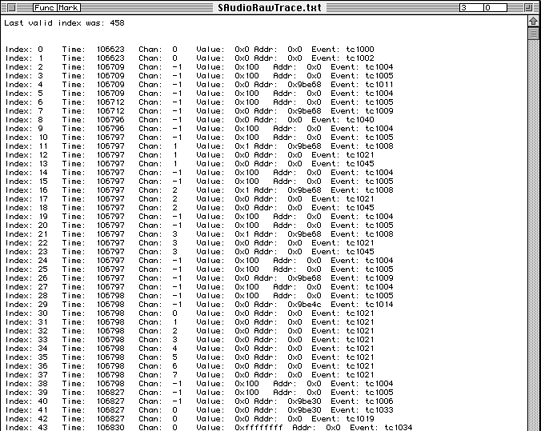
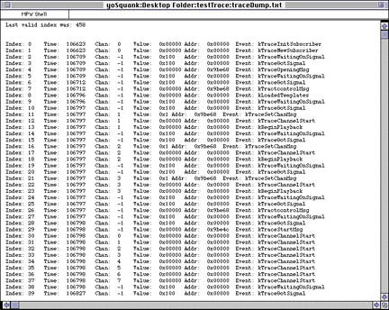
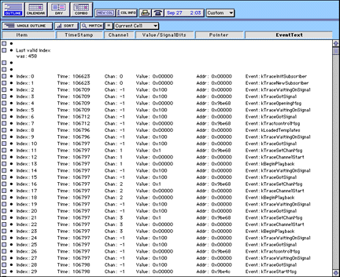

This section first provides a conceptual overview of how tracing is implemented, then steps you through using tracing as part of your application.
Example 1: Some trace codes from ProtoTraceCodes.h
Information collected by tracing includes both a simple list of events that were triggered and statistics about the events. You can then import the list or the statistical information into a spread sheet of your choice and organize it according to your needs. Some templates for the InControl spreadsheet are included.
enum {
kTraceInitSubscriber = 1000,
kTraceCloseSubscriber = 1001,
kTraceNewSubscriber = 1002,
kTraceDisposeSubscriber = 1003,
kTraceWaitingOnSignal = 1004,
kTraceGotSignal = 1005,
kTraceDataMsg = 1006,
kTraceGetChanMsg = 1007,
kTraceSetChanMsg = 1008,
kTraceControlMsg = 1009,
Note: To successfully use the files created during tracing, you have to replace all linefeeds with carriage returns. The MPW Canon tool can do that for you.
Example 2: Trace switches from the Protosubscriber makefile.
#####################################
# Trace switches, to help with real time debugging.
#
# XXXXX_TRACE_MAIN causes the given subscriber to leave timestamped trace data in a
# circular buffer which can be examined using the debugger, or dumped with
# XXXXX_DUMP_TRACE_ON_STREAM_CLOSE - which dumps the buffer whenever a StreamClosing
# message is received.
#
# Don't forget link with the trace code utilities if you want to use them.
#
#####################################
ProtoTraceSwitches = -dPROTO_TRACE_MAIN=1 -dPROTO_TRACE_CHANNELS=1 \xb6
-dPROTO_DUMP_TRACE_ON_STREAM_CLOSE=1 \xb6
-dPROTO_DUMP_TRACE_ON_STREAM_ABORT=1
Preparing tracecodes
The trace codes match events with code numbers. Trace codes are included with the SCEL subscriber, the SAudio subscriber, and the Proto subscriber. If you want to add tracing to other subscribers, you have to remove codes that are application specific, then add codes for events you want to monitor in your own application.
Looking at the tracing information
When you run an application that was built with tracing on in the makefile, two files are written to the /remote folder: one is a raw trace, and the other contains statistics about the events you decided to monitor.
Note: After you've turned on tracing, you should run your application only for a few seconds or the file will be corrupted: The tracing information is written to a buffer that wraps and overwrites early information if you're not careful.
To look at one of the trace files written to /remote, go through these steps:

Figure 1: Raw trace example.
Canon dictionary < rawtrace > macrawtrace
A sample dictionary is provided as part of the SAudio subscriber.

Figure 2: Raw Trace after Canon tool has been used.
If you own the InControl application, you can copy and paste the trace dump into the template provided inside the ProtoSubscriber folder. This makes viewing much easier. For example, you can look a the time a signal was received; at the time a certain signal was used; or any other event information. The figure below shows an example of a trace inside the InControl application.

Figure 3: Looking a a raw trace with a spreadsheet application.